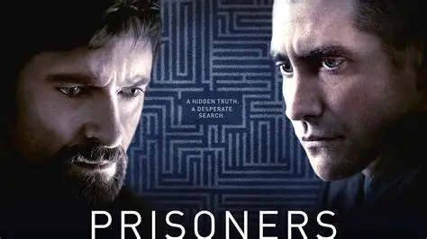

"Prisioneros" es una película de suspense y drama que explora la desaparición de dos niñas y la desesperada búsqueda de sus familias. La trama se centra en Keller Dover, un padre que, tras la desaparición de su hija y la hija de su vecino, decide tomar la justicia por sus propias manos. La película aborda temas como la justicia, la venganza y la moralidad, y muestra cómo los límites de la justicia pueden ser desafiados por el amor y la búsqueda de la verdad.
La película "Prisioneros" cuenta con un elenco destacado que incluye a Hugh Jackman, Jake Gyllenhaal, Viola Davis, Maria Bello, Terrence Howard, Melissa Leo y Paul Dano. Estos actores interpretan personajes clave en la trama que gira en torno al secuestro de dos niñas y los esfuerzos de sus familias y la policía por encontrarlas. La película ha sido bien recibida por la crítica y ha sido candidata a un premio Óscar en la categoría de mejor fotografía.
Trailer